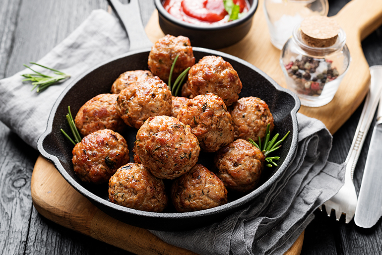
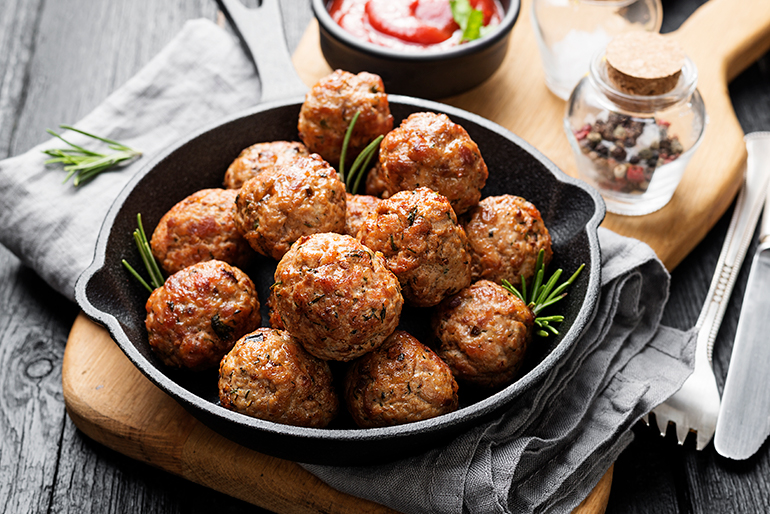

| Prato |
Descrição |
Preço |
| Bolinho de carne |
Crocante, saboroso e recheado com tempero caseiro especial. |
R$ 8,00 (unidade) |
| Feijoada |
Tradicional, servida com arroz, farofa, couve refogada e laranja. |
R$ 32,00 |
| Parmegiana |
Filé empanado, coberto com molho artesanal de tomate e queijo gratinado. |
R$ 35,00 |
| Baião de dois |
Arroz e feijão verde combinados com carne de sol e queijo coalho, no melhor estilo nordestino. |
R$ 28,00 |
| Peixe grelhado |
Leve e saboroso, servido com arroz de brócolis e batatas coradas. |
R$ 33,00 |
 
